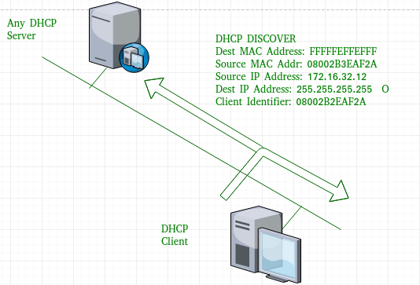
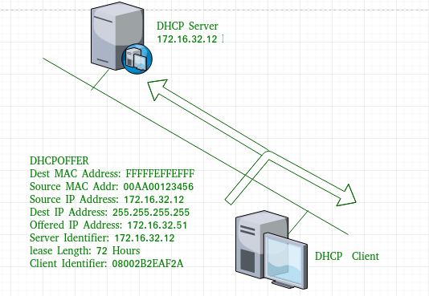
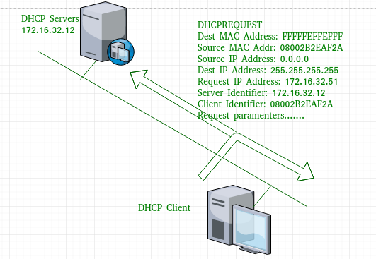

Dynamic Host Configuration Protocol (DHCP) is based on client-server protocol which provides an Internet
Protocol (IP)
address automatically to the devices which want to make connection with a server. Thus, Dynamic Host
Configuration
Protocol (DHCP) is an application layer protocol which is used to provide:
1. Subnet Mask 2. Router Address 3. DNS Address 4. Vendor Class Identifier
According to RFCs 2131 and 2132, the Internet Engineering Task Force (IETF) defines DHCP as a standard built
on the
Bootstrap Protocol (BOOTP), a protocol that DHCP shares many implementation specifics with. A DHCP server
can provide
host devices with the necessary TCP/IP setup data. Windows 2016 server also includes DHCP server which is an
optional
network server and can be used to lease IP addresses and other information to establish successful
connection. DHCP is
also based on discovery, offer, request, and ACK.
In the above diagram, We can notice that DHCP server takes help of IP address database to generate a range
on IP
addresses and then assigns those addresses to the hosts with help of IP router.
DHCP port numbers are 67 for the server and 68 for the client. It employs UDP services and is a
client-server protocol.
A pool of addresses is used to assign IP addresses. The DHCP connection process, also known as the DORA
process,
involves the client and server exchanging 8 DHCP messages, though mostly 4 DHCP messages.
Advantages of using DHCP:
a. It offers centralized management of IP addresses.
b. New host devices can easily added to the connection while the computers which are no longer
connected can
be removed
from server connection.
c. Without having to reconfigure every client, DHCP server's IP address space may be easily
changed.
d. Automatic management of IP addresses, including the prevention of duplicate IP address
problems.
e. Allows support for BOOTP clients, so you can easily transition your networks from BOOTP to
DHCP.
f. Allows the administrator to set lease times, even on manually allocated IP addresses.
g. Allows limiting which MAC addresses are served with dynamic IP addresses.
h. Allows the administrator to configure additional DHCP option types, over and above what is
possible
with
BOOTP.
i. Allows the definition of the pool or pools of IP addresses that can be allocated dynamically. A
user might
have a server
that forces the pool to be a whole subnet or network. The server should not force such a pool to consist of
contiguous
IP addresses.
j. Allows the association of two or more dynamic IP address pools on separate IP networks (or
subnets). This is
the basic
support for secondary networks. It allows a router to act as a BOOTP relay for an interface which has more
than one IP
network or subnet IP address.
How Does Software Defined Networking Work?

1. DHCP discover message:
This is the initial message produced throughout the server and client's communication process. To find out
whether a
network has any DHCP servers or servers at all, the client host generates this message. To locate the DHCP
server, this
message is broadcast to all connected devices in the network. The size of this message is 342 or 576 bytes.

2. DHCP offer message:
The unleased IP address and other TCP configuration details will be supplied by the server in its response
to host in
this message. The server is broadcasting this message. The message is 342 bytes in size. The client host
will take the
first DHCP OFFER message it gets if there are many DHCP servers available in the network. In order to
identify the
server, a server ID is also supplied in the packet.

3. DHCP request message:
A client will broadcast a DHCP request message in response to an offer message it has received. The client
will do a
free ARP to see whether any other hosts with the same IP address are already present on the network. If no
other host
responds, there are no hosts in the network with the identical TCP configuration, and the message is sent to
the server
to indicate that the IP address has been accepted. This message also includes a Client ID.
In conclusion, DHCP is a protocol that allows mobile hosts, such as notebook PCs, to access network
resources. Security is not taken
into account in the present DHCP protocol. Each client can utilise the network if the client configures
network
resources such as IP address. Furthermore, contemporary DHCP servers assign network resources to any client
who makes a
request. To address these issues, the IETF has suggested an authentication technique for the DHCP message,
which is also
available as an Internet Draft. However, this solution simply authenticates DHCP messages between the server
and
clients, and therefore ignores the necessity for client-level access control. On the basis of this
technique, DAG has
been constructed and assessed as an access control gateway. Only authorised clients received network
resources from an
authenticated DHCP server. DAG's access control is based on the DHCP ACK message's allotted information for
a client.